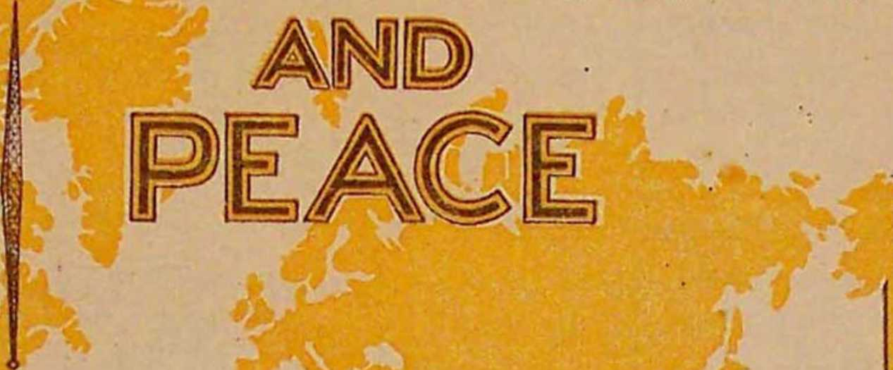

GOVERNMENT
THE SPIRIT OF INDEPENDENCE from a foreign power still lives! A few men, imbued with liberty, honesty, plain speech, and genuine public interest, still have the courage to stand forth and display that spirit which has kept democratic countries, until recently, free.
Any who on June 25, 1939, heard directly at the world convention or by wire or radio the speech "Government and Peace" will, to be honest with himself, have to admit Judge Rutherford is, in deed and utterance, a type sorely needed in this time of peril.
Your true friend speaks frankly, without hypocrisy. In your interest he warns of lurking danger and boldly points out the stealthy enemy and their methods and activities which would deprive you at last of life, liberty, property and happiness. Judge Rutherford proves himself such a friend to you. With benefit you will prove it by reading his speech herewith presented. More than 75 stations radiocast it from New York city. By beam and telephone line connections with New York simultaneous conventions in more than 30 cities in Great Britain, Canada, Hawaii, Australia, India and America heard it together.
THE PUBLISHER
FIRST PRINTING
10,000,000 copies
© 1939
AND PUBLISHED BY
WATCHTOWER BIBLE AND TRACT SOCIETY, INC.
International Bible Students Association, Brooklyn, N. Y., U. S. A.
BRANCH OFFICES:
London, Buenos Aires, Paris, Toronto, Strathfield, Cape Town, Berne, Shanghai, and other cities.
Made in the United States of America
PERSONS OF GOOD WILL toward the Creator desire to live under a government of peace, righteously administered for the common good.
There cannot be lasting peace without a just and righteous government. There can be no just and righteous government without peace. Imperfect men have failed to erect such a government.
Today in every nation there is much discussion as to which government should continue, whether to change the form of government or to yield to a system which threatens arbitrarily to regiment and rule all the people. Necessarily this raises the question as to the preservation of peace and the prevention of war. Many of the governments are at odds with one another, and the entire world is in a state of perplexity and distress.
No good could come from holding up to ridicule individuals. No one can cite an instance in which I have publicly held up to ridicule any individual. Honest criticism of theories held and supported by men has always been considered proper and often profitable. Persons of good will are reasonable. They will weigh the argument offered and then decide, each one for himself. I have no fight against anyone because of race, nationality, color or religion. I am against iniquity and hypocrisy. My purpose is good toward all. To arrive at a just conclusion one must be informed as to the facts. I wish to submit the facts which no fair person can call in question, to the end that the people may see that there is a means of relief from the world distress.
Over a period of many centuries sincere men have put forth their best endeavors to form and maintain a government of peace and righteousness. Their efforts have not brought about the desired result. In view of this, reasonable persons necessarily ask the question: Will the nations continue to be divided and at odds with one another or will a government free from war and administered in righteousness ever be attained?
Human theories cannot supply the correct answer to that question, but the correct answer can be found elsewhere. All just powers of government proceed from Almighty God, who is perfect and who commits no errors. Therefore The Theocracy is the only government that can give the desired results. In proof I submit, not the theories of men, but the historical experiences of men and governments, viewed in the light of God's infallible Word.
THE THEOCRACY is a government of the peoples of earth administered by the immediate direction of Almighty God. Necessarily such a government is perfect and righteous. Man is the creature of God, and man was created for the earth, and the earth created for man. (Isaiah 45:12,18) Men of wisdom look to the Creator for guidance in the right way. It was THE THEOCRACY which Jesus announced, and for which he taught his followers to pray to God: Thy kingdom come; thy will be done, on earth as in heaven.' For nineteen centuries Christians have continued to sincerely utter that prayer. Such is proof that the governments of earth have been and are now administered according to human theories and earthly wisdom. In this hour of world distress I ask, What nation on earth desires God's government for which Jesus taught his followers to pray? The correct answer is, Not one! I invite sober-minded people of the world to now give unbiased consideration to the facts, which are shown both by Scriptures and by the history of the world.
The first law given to perfect man in Eden was not a political law, but a theocratic law. (Genesis 2:16,17) The breaking of that law by man laid the foundation for and resulted in the terrible conditions that now obtain world-wide. Sixteen centuries after the giving of that law violence filled the earth and there was no peace. That condition was due to the refusal of creatures to obey the theocratic rule, and the result was destruction of all flesh, save only the eight persons who did obey God. (Genesis chapters 6 and 7) Modern-day conditions parallel those which obtained immediately preceding the Deluge. A like result is to be expected upon the present world.
Following the Flood the first organized government was a totalitarian rule with Nimrod as dictator. That government was organized in defiance of God. It was a union of religion and state, which in modern times is called "union of church and state". Nimrod, the ruler, exalted himself, and made the people honor and hail him as the mighty one, greater than the Almighty God. (Genesis 10:8-10) Under his rule the people forgot God. After Nimrod's death he was deified and was called by his followers "the father of gods". It must be considered that Nimrod's government was the product of Satan, the adversary of the Almighty God. Nimrod's dictatorial government was against peace. He carried on a war of conquest, regimented the people, and kept them in a state of fear. He even instituted a public works program of building the religious tower of Babel and other structures, and Nimrod's works suffered destruction. — Genesis 11:1-9.
Nimrod's example was followed, and rival totalitarian governments were set up in different parts of the world, which governments prosecuted wars of conquest and took away the peace of the people. Abraham, whom God called his "friend", fled from the political, religious government of Babylon, hoping for the Theocratic Government, which God promised to come in the far distant future. Thereafter all the faithful prophets and servants of God held themselves entirely aloof from the political, religious governments of earth and, as is recorded at Hebrews eleventh chapter, they "confessed that they were strangers and pilgrims on the earth", hoping and waiting for the Theocratic
Government by the Messiah. Because of their faith and devotion to God those faithful men were persecuted to death, and of them it is recorded: 'The world was not worthy of them.'
God first revealed his name "Jehovah" to Moses, and that name "Jehovah" means his purpose toward the people. With the descendants of Abraham Jehovah God set up a typical theocracy, that is, a small pattern of his real government to be established in the future. Thereafter he used that people to make prophetic pictures or dramas illustrating the development of his real government. By the physical facts, which he has now brought to pass, he makes clear the meaning of those prophetic dramas. Moses was Jehovah's visible representative and was used as a type or picture of Christ the Messiah, whom God promised to install as Governor of The Theocracy.
To safeguard his typical people from religion Jehovah gave to the Israelites his law, which forbade them to bow down to or to attribute salvation or protection to any creature or thing. (Exodus 20: 2-5) Thereafter the Israelites yielded to the influence of the clergy and to religion, in violation of God's law, and asked for a king from amongst men, that they might honor and serve a man. Concerning this Jehovah said to his prophet Samuel: "They have rejected me, that I should not reign over them." (1 Samuel 8:4-8) Religion, adopted and practiced by the Israelites, ruined that typical government, and the nation went into oblivion. Their temple, which was called by Jehovah's name, became a commercial "den of thieves". — Jeremiah 7:11; Luke 19:46.
Then came Jesus, the Governor, appointed for the great Theocracy. Jesus plainly told the leaders of Israel that they had adopted religious traditions of men and had forsaken Jehovah God. (Matthew 15:1-9) Those leaders refused the theocratic government and voted for a totalitarian government, as represented in the heathen Tiberius Caesar, during whose despotic rule lese majesty, or high treason against the earthly ruler, was first made a capital crime. Because of his faithfulness to Jehovah God, the Great Theocrat, and because of his boldness in telling the people that religion is a snare of the Devil and that God's kingdom was their only hope, Jesus was falsely charged with the crime of high treason and was crucified. It was the religionists who made that charge and who produced perjured testimony in support thereof. It was the same religious leaders that tried to hide the fact that Almighty God had raised Jesus out of death.
The resurrection of Jesus and his exaltation to heaven did not mark the beginning of the Theocratic rule in the earth. That must wait God's due time. (Psalm 110:1; Hebrews 10:12,13) For that reason the Theocratic rule has been exercised during the past nineteen centuries only with respect to the Christians who fully devote themselves to God and Christ Jesus and who form God's organization on earth. Hence the Scriptural statement at Romans 13:1 and 1 Peter 2:13,14 concerning the "higher powers" and "governors" does not apply to any political rulers of the world, but applies only to the Christian organization, of which Christ Jesus is the Head.
Christianity has never been popular in this world. Christians have been and are despised and rejected by religious rulers. What is called "the Christian religion", however, is popular amongst worldly rulers, and the leaders therein are honored and praised by the people more than any other class of men under the sun. The reason is, because the people have been induced to believe that Christianity and religion are the same thing, whereas in truth and in fact religion has ever been and still is the violent opponent of the Theocratic Government and hence against Christ. There is not one religious organization on earth today that boldly stands for and advocates God's kingdom under Christ as the hope for the people and as the remedy for human ills. I do not say this for the purpose of ridicule or to do injury to men, but because it is a fact. The people must be told that religion is the Devil's subtle scheme to deceive and turn them away from God, and this knowledge is necessary that they may flee from religion and serve God and Christ the King. If the political rulers in the nations today knew and appreciated this fact they would not say in this hour of peril what they are saying, "We need more religion"; but they would say, What we need is to turn to God and his King, Christ Jesus, and obey his law.
Why cannot a Christian recount the indisputable facts recorded in sacred as well as profane history, and relating to the present unhappy conditions, without being denounced as a bigot, an ignoramus and selfconstituted interpreter of the Scriptures? It is because the religionists, who thus charge Christians, have no answer to the facts or Scriptures and are compelled to resort to abuse in order to confuse the people and to hold their parishioners in subjection.
Concerning that body of Christians which God has named "Jehovah's witnesses", permit me to say, neither their learning nor lack of worldly education, their good reputation nor bad worldly reputation among men, has anything to do whatsoever with the matter under consideration. The message which they bring to the people is not the message of any man. They follow no man as earthly leader, because they have none. They are not a cult or a sect. Christ Jesus is their Leader, and they are wholly devoted to God and to his kingdom, and their sole work is to tell the truth to the people as set forth in the Bible, and they obey and honor God rather than men. If there is a great pit of disaster in the way of the nations, how can the people avoid it unless they learn about it? Men who think themselves great and important, and who receive the plaudits and praise of other men, entirely fail to inform the people of what things they should know. There is not one instance in history in which a man because of his worldly learning or wisdom or because of his high reputation among men has ever been chosen by the Lord and approved for any purpose. On the contrary, it is written in the Scriptures concerning those whom God uses to inform the people of his purpose, that 'God hath chosen the men which are despised by the worldly wise, that no creature should glory in His presence'. (1 Corinthians 1: 20-29) Let all who may wish to do so honor and bow down to men. Christians honor and bow down to God and Christ.
The purpose of a just government, as well declared by the Constitution of the United States, is: To "insure domestic tranquillity". There has never been a religious, political organization on earth that has set up a government that 'insured domestic tranquillity'; there has never been a government that gave lasting peace to the people; there is no reason to believe that human creatures can establish such a government, because they have proceeded and continue to go contrary to God's law.
The leading religious institution of the world, acting by and through the head man thereof, has tried to apply the theocratic or heavenly rule not only to religious organizations, but also to the political and commercial organizations, and this has been done by misapplying the Scriptures. There can be only ONE THEOCRATIC GOVERNMENT, and that of Jehovah God operated by Christ Jesus the King. Any attempt to rule the nations by dictators or by so-called "democracies", and in which the head of a religious organization occupies the position of supremacy, claiming to represent Almighty God, is a counterfeit, is false, and therefore a fraud and a snare into which the people are caught and suffer. No such government can ever bring peace to the world. For many centuries men have formed what is called "the union of church and state" or, as a better name, "union of religion and state," recognizing the religious head as the superior one; and the claim has been and is made that such religious, political government can and will bring about world peace. The facts are to the contrary. Has such a counterfeit theocracy been a blessing to the people and brought about peace? Let no honest man now denounce me as a bigot, because I cite the historical facts on this point and quote from the official religious Encyclopedia (Volume 3, page 615). In A.D. 800 the head of the world religious organization crowned Charles the Great (Charlemagne) as emperor of the Holy Roman Empire. Concerning the crowning of Charles the Great The Catholic Encyclopedia (Vol. 3) says: "He owed his elevation not to the conquest of Rome, nor to any act of the Roman Senate . . . , much less to the . . . citizenship of Rome, but to the pope, who exercised in a supreme juncture the moral supremacy in Western
Christendom which the age widely recognized in him." Certainly this is a bold and emphatic claim that religion and the religious head are supreme and above political rulers. A thousand years thereafter Napoleon upset that religious supremacy and the temporal rule of the religious leader. In 1929 the Roman political power restored to that religious leader temporal power. Shall the people forget the history of the thousand years from Charles to Napoleon, when there was a union of religion and state, with religion riding in the saddle? Did that bring peace and prosperity to the people? Was that so-called "theocracy" real or a counterfeit? Although the pages of many histories have been tampered with in recent years to hide from the people the facts, there still remains enough in them to inform all who wish to know that such a union of religion and state brought only strife and war for a thousand years and drenched the earth with human blood.
Today, when the world is in great need of peace, no effort is made by the nations to bring about real peace. I submit that the real remedy and the only hope for the peace of the world is now being willfully sidestepped and openly opposed by the leading religious and political organizations on earth. The union of religion and state, or of "state and church", has never brought peace and prosperity, but, on the contrary, has brought strife, war and poverty. Will the people of America and other democracies have to make another experiment with such a union of religion and state in order to prove whether such can solve the present day's difficulties, or will the nations profit by past experiences? The League of Nations has failed in its avowed purpose. Today dictators sneer at the democracies and call that system of government a "putrid" thing. Dictators and religionists are now acting together, and the so-called "democracies" are permitting all nations to be dragged into the camp of the dictators, and all, without one exception, are against God's kingdom by Christ.
As proof that the union of religion and state or "church and state" does not result in peace and never can bring about peace, I cite these facts. In 1929 religion was again exalted to the position of supremacy and almost all the nations recognized that fact. The pope declared 1933 a "holy year", and extended the time over 1934, announcing at the time the hope of causing "a golden flood of peace and prosperity" to flow to the nations. Was peace and prosperity the result? No, but exactly the contrary. That very so-called "holy year" saw the Nazi dictator assume the misrule of Germany. Quickly this was followed by the unrighteous war upon helpless Ethiopia; the revolt and terrible war of Spain, led by an avowed religionist, in which hundreds of thousands of people have been killed; also the Japanese invasion of China; then the seizing of Austria; then the rape of Czechoslovakia and the unlawful grabbing of Albania; all for the purpose of robbing Jews and wrongfully acquiring territory; and today marks the greatest preparation for war ever known. In all of these things religion and state acted together. Religionists now laud and praise the dictators and the leaders in war, who in violation of God's everlasting covenant have shed much innocent human blood. Dictators who disturb world peace are honored and praised by the religious leaders.
The Puritans fled from religious persecution in Europe and settled in New England with the hope that there they might worship God, free from religious and political interference. In that land the union of religion and politics has now worked a great change. In New England the persecution of Christians has again come to the fore. The Catholic Telegraph-Register of Cincinnati, April 28, 1939, quotes the distinguished Catholic Monsignor Matthew Smith as follows: "Stark Puritanism today no longer controls Boston, for this has become a Catholic town, one of the greatest in the world....
What happened in New England is going to happen . . . everywhere else in the United States." This is the expressed desire of religion to rule supreme, regiment and control the people.
Now the head of the religious world offers himself to the nations as a mediator of peace, calling upon the religious population to "raise special prayers [not to Almighty God, but] to [a woman called] the holy virgin" for peace among the nations, and the press announces that the dictators have signified their willingness for the pope to lead in this behalf. Note this, please, that today all nations are for man rule, with religion riding on top, and all are against Jehovah's Theocracy by Christ Jesus. Note this further and indisputable fact: that the fight is not Catholic against Protestant; the issue is not Fascism or Communism against democracies; but the issue is, man rule under Satan against Theocracy by Jesus Christ. It is religion and state against Christ and his kingdom. There is no middle ground, because Jesus emphatically says: "He that is not with me is against me." (Luke 11: 23) Dictators openly denounce Jehovah and Christ Jesus, and not one of the nations on earth declares for Jehovah and his kingdom by Christ. These facts cannot be disputed. None being for the Theocratic Government, all are against the government by Christ Jesus.
Instead of denouncing Christians who bring these facts to the attention of the people, why not give calm consideration to such facts? Misrepresentation can result in no good to anyone, but does result in much harm to everyone. Today the peoples of earth are being divided into two camps: one for Christ and his kingdom, and the other against Christ and his kingdom. Worldly ambassadors amongst the nations are hurrying from one nation to another in an effort to maintain peace, but their efforts avail nothing and the nations are in great perplexity and distress. Jehovah, foreknowing the present-day conditions, says of such worldly ambassadors: "The ambassadors of peace shall weep bitterly." (Isaiah 33: 7) Why? Jehovah answers, at Jeremiah 8:11, that they cry: "Peace, peace"; "when there is no peace." There can be no peace between the great Theocracy and the counterfeit, which counterfeit is "the abomination of desolation". (Matthew 24:15) God then foretells the ambassadors of the nations, who think to establish peace, as saying in despair: "We looked for peace, but no good came; and for a time of health, and behold trouble!" (Jeremiah 8:15) Well do those prophetic words describe the nations where there is union of religion and state.
This is not a time of peace between Jehovah God and the counterfeit operating in his name and which constitutes the "abomination of desolation", but, as the Lord declares, it is "a time of war", that is, a war between the great Theocracy and the nations and peoples that stand against God and his kingdom. Jehovah's witnesses now come, as commanded by the Lord, publishing peace and salvation by and through God's kingdom; and that message of God concerning his kingdom angers the present world rulers, religious and political; and concerning such Jesus says (Revelation 11:18): 'The nations are angry, and God's wrath has come, and his time to destroy them which destroy the [peace of] earth.' The union of church and state, placing the state above Almighty God and opposing the great Theocracy, is hurrying all the world on to Armageddon. That is the time and place where the issue between God and Satan will be settled, and all who remain on the side of Satan will be destroyed with him.
Jehovah's witnesses now speak to the world, not a message of hatred and strife as they have been wrongfully charged, but they bring the message of unselfishness, which proceeds from Almighty God, as recorded in His Word. Jehovah's witnesses are not bigots and do not claim to interpret the Scriptures. As servants of the Lord they merely direct the attention of the people to God's way, which is the only way for righteous government and peace. In the world there must be now millions of sincere persons who are largely influenced by religion and religious leaders and yet who believe that Jehovah is the Almighty God and that Christ is the Savior of man. To such we appeal, urging that they take as their guide the Word of God and refuse to obey the word of man.
Foretelling the day of final reckoning, Jehovah God tells of his righteous government and the Governor thereof in these words (Isaiah 9: 6, 7): "For unto us a child is born, unto us a son is given, and the government shall be upon his shoulder; and his name shall be called Wonderful Counsellor, The mighty God, The everlasting Father, The Prince of Peace. Of the increase of his government and peace there shall be no end." Mark here the authoritative statement that the government of peace is the Great Theocracy by Christ
Jesus.
That prophecy recorded by Isaiah began to have its fulfillment when the child Jesus was born at Bethlehem. Take note of the message from Jehovah at that time, and further take note that no religionist was permitted by Jehovah to be a witness to that marvelous event. On the contrary, God chose as his witnesses for that occasion meek sheep-herders, and doubtless there were none of them who had been educated in a parochial college. To them God's angel announced the birth of Jesus, the Savior of the world, and immediately the host of heavenly messengers together sung these prophetic words (Luke 2:6-14, Rotherham): "Glory in the highest unto God! and on earth peace, among men of goodwill." It was that same Jesus who later announced the kingdom of heaven, and himself as King, whom God had appointed to rule the world in peace. It was that same Jesus of whom God, by his prophet, had said: 'Upon his shoulder shall rest the government.' It was that same Jesus who declared to the people God's purpose to set up a righteous government of peace, and because thereof religionists falsely charged him with treason against Caesar, for which "crime" Jesus suffered an ignominious death.
From that day till this persons of good will toward God have declared themselves on the side of God and Christ and against wickedness. Now, true to Jehovah's promise, the resurrected and glorified King, Christ Jesus, has come to reign as the Governor of the world, ruling in righteousness, and the people of good will are for him and his kingdom. Who is against him and his kingdom? All totalitarian governments and rulers, all of which are aided and abetted by the religious leaders, and all insist upon man-rule of the world.
Whether you have been a Catholic or a Protestant, a Jew or a Gentile, is of no importance. The sole question is: Are you for God's kingdom by Christ, or do you favor and support the rule by selfish men? Why is that important? Because it is only those persons who are of good will toward God that will receive the blessings of the great Theocratic Government. Mark the emphasis of the prophetic words uttered from heaven at the time of the birth of Jesus, and which constitute good news to all who receive them: "Glory in the highest unto God! and on earth peace, among men of goodwill. " (Rotherham) It necessarily follows that only those who are of good will toward God and his King can have and enjoy the blessings of peace. Those who are against the kingdom by Christ Jesus can never have peace.
Jesus emphasized his coming in glory and the importance of his kingdom, and his apostles did likewise. He declared that then he would divide the peoples of the nations as a shepherd divides his sheep from the goats, and that those of good will, called "sheep", he would set in the class of "blessed" ones, while those who oppose him and his kingdom must suffer destruction. (Matthew 25:31-46) Now the King has come and the dividing is in progress. Again it is observed that religious leaders and dictators are against Christ and his kingdom, and hence they put themselves in the "goat" class; while the people of good will, coming from all nations, kindreds and peoples, take their place on the side of Christ and his kingdom, and hence are of the "sheep" class, which receive the Lord's favor.
Why longer follow the traditions of men as to what is necessary for salvation? Why not take the Bible as your guide? But who can interpret the Bible? is asked. The answer is, No man. God has not delegated to any man the power to interpret the Scriptures; but if you can read or have it read to you, you or anyone else can see what is right and what is wrong, and then be guided by what the Lord says. Peter, the apostle of Christ Jesus, and who some wrongfully claim was the first pope, says, at 2 Peter 1:20, 21, 'that the Scriptures are not of private interpretation.' To this the apostle Paul adds his testimony, at 2 Timothy 3:16,17, that all scripture is profitable for the man who is of good will toward God, whether educated as a priest or as a carpenter. Furthermore says the apostle (2 Timothy 2:15): 'Study to show yourselves approved unto God,' and not unto man. One who obeys this injunction must individually study what God has put in His Word.
All reasonable persons must now see that no righteous government with lasting peace has ever existed on earth. God announces that only The Theocratic Government, by Christ Jesus, can bring the desire of honest men. I invite your fair, unbiased and sincere consideration of the Scriptures, which any man of sincerity can understand. Almighty God spoke to David, who pictured Christ Jesus, and said (2 Samuel 23: 3): "He that ruleth over men must be just, ruling in the fear of [Jehovah] God." No human dictator who is against God and Christ could possibly fulfill that requirement. No man who supports the union of religion and state, and who is ambitious for honor, could meet that divine requirement. Imperfect men cannot rule in justice and righteousness.
How can a righteous government be had and enjoyed? Concerning The Theocratic Government, long ago Jehovah gave his unchangeable word that he would raise up his Messiah, the Anointed One, to rule the world in righteousness. To give full assurance to man God says (Isaiah 55:11; 46:11): "My word . . . shall not return unto me void." 'I have said it, and I also will do it.' Jehovah names Christ Jesus "The Prince of Peace", upon whose shoulder the government shall rest (Isaiah 9:6, 7), and the One who shall minister the blessings of life to the people. Again he says of Christ the Theocratic King: 'He shall rule in righteousness.' (Isaiah 32:1) That Theocratic Government will give no place to political dictators and religionists, such as now rule the world, and concerning such God says (Daniel 2:44): "And in the days of these [dictator] kings shall the God of heaven set up a kingdom which shall never be destroyed; and the kingdom shall not be left to other people, but it shall break in pieces and consume all these [dictator] kingdoms, and it shall stand for ever." A man does not need to be bred and brought up in a parochial school in order to understand that, does he? The Lord Jesus, the great Governor, will have his representatives on earth in the persons of the faithful men of old, some of whom are mentioned at Hebrews eleven, and who will act as Christ commands. — Isaiah 32:1.
Will the people of good will toward God and his kingdom be glad under his rule of righteousness? At Proverbs 29:2 the answer is: "When the righteous are in authority, the people rejoice; but when the wicked beareth rule, the people mourn." That plainly contrasts the dictatorial rule with the righteous rule of Christ Jesus. "Zion" and "Jerusalem" are names belonging exclusively to Jehovah's organization. The political and religious rulers of today are not of Zion, but in opposition thereto. Note what the Scriptures say concerning the joy of the people under Christ the King (Zechariah 9:9): "Rejoice greatly, o daughter of Zion; shout, o daughter of Jerusalem; behold, thy King cometh unto thee; he is just, and having salvation."
It must be admitted that in every nation today the poor suffer much sorrow and oppression at the hands of the strong (particularly the Jews, in the hands of religionists), but mark now what the Scriptures tell of the great Theocratic Government by Christ Jesus, the Governor. (Psalm 72:4) "He shall judge the poor of the people, he shall save the children of the needy, and shall break in pieces the oppressor." The Theocratic Governor will rule all the peoples of the earth (Psalm 72: 7, 8): "In his days shall the righteous flourish; and abundance of peace so long as the moon endureth. He shall have dominion also from sea to sea, and from the river unto the ends of the earth."
Never has there been a government by men that has put in operation the righteous principles of the Theocracy. After many centuries of the union of religion and state all nations today are in a state of turmoil. Is it possible for men, by the union of church and state, to set up and conduct a righteous government that will bring peace and salvation to the people? Such is absolutely impossible, because, says the Word of God (Matthew 12:18-21): 'Behold my servant, Christ Jesus, whom I have chosen; in his name shall the nations hope.' (Acts 4:10-12) "Neither is there salvation in any other: for there is none other name under heaven ... whereby we must be saved."
When may we expect the Theocratic Government to rule? Satan's time is up, and Jehovah has now enthroned Christ Jesus and sent him forth to rule while the enemy still stubbornly holds on and refuses to vacate. (Psalm 110:2; Revelation 11:18) What, then, must quickly follow? The Scriptures answer, Armageddon, the battle of the great day of God Almighty. (Revelation 16:14,16) The Prince of Peace will fight against the wicked, that peace and righteousness in earth may be established. At Psalm Two Jehovah warns the nations that his King shall dash them to pieces if they do not yield. Jehovah now sends forth his witnesses in the earth to sound that warning. Dictators and religionists openly defy God and his King and persecute his witnesses. In the democracies religion and politics form what is called a "union of church and state" and insist that imperfect men shall rule contrary to the command of the Most High, and all nations are lining up against the Theocratic Government by Christ. There is no nation on earth that gladly receives Jehovah's witnesses and the message they bring. The dictators are wickedly persecuting all who serve God and his King, and all the nations have forgotten God and have turned wholly to the advice and leadership of men. Such are the conditions in all nations. And what is to follow? The answer appears at Psalm 9:17: "The wicked shall be turned into hell, and all the nations that forget God." Such shall be the result at Armageddon, as
God declares. All people of good will believe and obey God. Such only will emerge from Armageddon and for ever enjoy the Theocratic Government of peace.
This day the judgment of the nations is in progress and all individuals are taking sides, and thereby each one is fixing his own destiny, as you have seen today. Christ Jesus the great Judge is conducting the judgment. Those persons of good will, who have a desire to see Jehovah's government of righteousness, are taking the side of Christ the King, while all the selfish ones are siding against the Theocrat and His King. The Lord is not arbitrarily deciding who shall survive Armageddon, but, on the contrary, each one by his own course of action determines that. The judgments are already written, and the record thereof at Matthew 25 reads, that the opposers of the Kingdom shall suffer everlasting destruction, and that those who support the Theocratic Government shall receive everlasting life. To these latter ones the Lord says: "Come, ye blessed of my Father, inherit the kingdom prepared for you from the foundation of the world."
Because Jehovah's witnesses bring to the people this message of truth from God's Word they are denounced by religionists as bigots, breeders of strife, reds and seditionists. The religious leaders pretend to serve God, and yet they do violence to his servants, deny his Word, and reject his King. Against such opposers Jesus pronounces his final judgment in these words
(Matthew 25:41): "Depart from me, ye cursed, into everlasting fire, prepared for the devil and his angels."
Sincere persons are now asking: What shall we do to find protection and salvation? The Scriptures give answer: Abandon the traditional teachings of religious men and religious organizations, study Jehovah God's Word, and obey His commandments, because, as it is written, in John 17:3, 'This is life eternal, to know God and Christ his King.' Throughout the nations of earth persons of good will are rapidly fleeing from religious institutions of all kinds and are seeking to know what God has for them. Learning that the only place of safety, and the only means of salvation, is by and through The Theocracy, they support The Theocracy, and they are rejoicing, while at the same time they are receiving persecution at the hands of religionists. Let all persons of good will toward God know for a certainty that God is no respecter of persons. Whether a man be a Catholic or Protestant, Jew, bond or free, matters not with the Lord. If a man loves righteousness and hates iniquity he will declare himself on the side of the Theocratic Government, and will receive protection and blessings of the Lord. I hold in my hand a book which the publishers this day release to the people of good will. It is entitled Salvation. It does not contain the theory or opinion or doctrine of any man. Therein you will find the Scriptures, as set forth in the Bible, pointing the way to protection and salvation to life everlasting.
It is now apparent to all persons of good will and reasonable mind that no earthly rule by religious and political men can bring peace and prosperity, health and life to the people. You see such a combine of religious and political rulers now standing in the place where they should not stand, claiming the wisdom and ability to set up and operate a just government of peace, but you know that such a combination is doomed to failure and absolute destruction. The Lord declared that exactly this condition would obtain in the earth just preceding Armageddon, and hence he advises all persons of good will to flee to the Theocratic Organization. (Matthew 24:15,16) Take his advice and live. Refuse to give heed to that advice and die. Jehovah now makes it clearly to appear from his Word that religion is doomed everlastingly, because the time for his government and peace is here and which is the only means of salvation. There is no middle ground. Let all who desire to abide with religion and dictators do so. The truth is now declared, and each one must either accept or reject it.
Jehovah God commands (Exodus 9:16) that just preceding Armageddon his witnesses must declare to the people his name and his King and kingdom; that they must warn the people concerning the snare of religion and religious dogmas. In obedience to God's commandment Christians are bringing this information to the people. The radio was for some time extensively used for that purpose, but now is limited by reason of the violent opposition of religionists who have, by boycotts and threats, greatly embarrassed many radio station owners. Jehovah's witnesses have provided themselves with thousands of phonographs and recorded speeches, by which the people are informed and comforted, and during the past few months many thousands of persons from both Catholic and Protestant organizations have entered the field as witnesses for the Theocratic Kingdom. Such witness work has greatly enraged the religious leaders, who have organized mobs and committed violent assaults upon the Lord's servants. In an effort to interrupt the message of The Theocracy the religious leaders induce the lawmaking bodies of the land to enact laws specifically directed against Jehovah's witnesses. Acting upon the advice of religious leaders, the New Jersey legislature, by enactment, has made it a crime for parents to teach their children the commandments of Almighty God. Why such violent and persistent opposition? Is it because Jehovah's witnesses are endangering the welfare of the people? No, not at all. The sole reason for such opposition is that religious leaders and allies are against the Theocratic Government by Christ Jesus.
For fifteen centuries organized religion and religionists have proceeded against and in defiance of the Theocratic Government. Now the day has arrived when Christ, the Theocratic Governor, has taken his power, and for that reason the opposition has reached the highest degree of violence. God's command is that the people of good will must be informed, to the end that they may flee before the expression of His wrath upon the world. The Lord by this means is now gathering unto himself his "other sheep" (John 10:16), that will form the "great multitude" (Revelation 7: 9-17), which will survive Armageddon and populate the earth with a righteous race. For their information the position of Jehovah's witnesses must be made clear; therefore I submit the following:
(1) All persons who are wholly devoted to Jehovah and his King, Christ Jesus, are Christians and hence bear the name "Jehovah's witnesses". (Isaiah 43:10-12) The witnesses of Jehovah are not religionists, they are not reds, they are not Communists, they are not a religious denomination, nor a sect, nor a cult. They are simply Christians. They have no fight with anyone because of nationality, race or creed.
(2) Jehovah's witnesses are against lawlessness. They gladly obey every law of the nation in which they are domiciled, if such law is not in direct violation of the law of Jehovah God, whom they acknowledge as supreme. If obedience to a law of the state or nation would compel them to thereby violate God's law, they will "obey God rather than men". — Acts 5: 29.
(3) They refuse to bow down to or hail any man or man-made power, thereby attributing to such human power protection and salvation, because they acknowledge Jehovah God and Christ as "the Higher Powers". (Romans 13:1) For that reason alone they refuse to salute the flag of any nation or hail any man. To salute a flag or hail a man would make them breakers of the law of Almighty God and result in their destruction for ever. (Exodus 20:3-5) If the state or nation inflicts punishment upon them and their children because they obey God's law, then they will follow the same course as taken by the three faithful Hebrews, relying upon Jehovah God, whom they serve, to deliver them. — Daniel 3:16-18.
As Christians we are for Jehovah God and His kingdom. I appeal to the people of good will in every part of the earth to take their stand firmly and immovably on the side of the Theocratic Government by Christ Jesus. There is no other place of safety and no other way of salvation to life. It is his government of peace, and, say the Scriptures (Psalm 29:10,11): "The Lord sitteth King for ever. The Lord will give strength unto his people; the Lord will bless his people with peace."
To THE VATICAN HIERARCHY AND RELIGIOUS SUPPORTERS I address these words: You acknowledge yourselves as part of the DICTATOR governments which cruelly persecute Jews and Christians; hence you oppose THE THEOCRACY.
For fifteen centuries you have blasphemed Jehovah God's name, disturbed the peace of the world, fomented and prosecuted wars of conquest, caused the untimely death of countless innocents, clothed their chief killer in robes of glory and held him up to the world as an example of virtue; Spain being among your more recent scenes of violence. Therefore God declares to you: 'Upon your skirts is found the blood of the souls of the poor innocents.' — Jeremiah 2:34.
By putting the people in fear you have kept many in ignorance, and now you incite the ignorant to commit for you assaults upon Christians. You have destroyed freedom of speech and of worship, and now you would take away all liberties of the people. Heretofore you have crushed every movement for truth and righteousness; BUT be informed that you cannot succeed in your opposition to THE THEOCRACY. Jehovah's witnesses do not fear you, because God is with us. (Jeremiah 1:19) YOUR END has come. The divine judgment is written against you, declaring your destruction, and you are going to die, and, further, that the memory of you shall perish for ever. — Psalm 145: 20; Proverbs 10:7.
To ALL ORDER-LOVING CATHOLICS, JEWS AND PROTESTANTS I address these words of hope: Heretofore you have followed the lead of unrighteous men, permitting them to think for you. If you would escape disaster and find salvation to life you must forsake religion and choose and serve Jehovah God and Christ his
King. All who do not stand for God and his kingdom by Christ remain in opposition and will be destroyed. Those of good will toward God will choose his government under Christ. Those now hearing and who desire that righteous government and peace, say AYE.
The tremendous roar of AYE that went, up from 18,000 throats was instantly followed by a burst of applause and cheering that literally echoed round the world by means of telephone lines and by radio, as tens of thousands who were listening at more than 30 simultaneous conventions throughout the world joined in the shout and demonstration of joy.
You AYES will BACK UP YOUR WORD and "proclaim liberty throughout all the land". (Leviticus 25: 10)
All approving the above adopted Resolution will be eager to prove they have taken their stand for THE THEOCRACY, by spreading this message. To cooperate, the Publisher gladly makes this special offer:
To all who contribute $1.00 we offer to send fifty (50) copies of this booklet for you to distribute among your friends and others. Send to:
WATCHTOWER 117 Adams St. Brooklyn, N.Y.
THE ALMIGHTY, THE MOST HIGH, is the God "whose name alone is JEHOVAH". (Psalm 83:18) Those who get life everlasting must come to know and to acknowledge that indisputable fact, because "salvation belongeth unto Jehovah". (Psalm 3:8, A.R.V.) His Word is right, and his works are all done in truth. (Psalm 33:4) All the wicked fight against Jehovah. The time is near when all living creatures will sing of Jehovah God this song: "His right hand, and his holy arm, hath gotten him the victory." (Psalm 98:1) Jesus Christ is Jehovah's "right hand", executing his purposes, and he shall rule the world in truth and righteousness.
John, the prophet of Jehovah, came announcing Jesus as the One whom God anointed to rule the world. From Enoch to John, all the prophets, and the law covenant, had prophesied of the King and his kingdom. Violent opposition against John was manifested because he announced the King. Because he continued faithfully in the performance of his duty John suffered a violent death. Jesus, the anointed King, began his work amidst violent opposition and, addressing his disciples, he said: "From the days of John the Baptist until now the kingdom of heaven suffereth violence, and the violent take it by force." (Matthew 11:12) That prophecy began to have fulfillment upon Jesus, and thereafter Jesus the King suffered a violent death. That appeared to be a victory for the wicked one; but that victory was only temporary. God raised Jesus the King out of death and exalted him to the highest place. Jesus informed his disciples that all his true followers would suffer violent opposition. That prophecy has been in course of fulfillment from then until now. The kingdom is here, and again the violent attempt to take it by force. But this time the wicked shall fail completely. Jehovah's name shall be vindicated, and his King shall gain the complete victory.
The apostles knew that "the Kingdom" is the great doctrine of truth, but following the days of the apostles sincere persons lost sight of God's chief purpose. With the coming of Christ Jesus to the temple, in 1918, the chief purpose of Jehovah began to be made clear. Prior to that time even the most devout Christians believed that God's chief purpose is the salvation of men from destruction. Now his people clearly understand that the chief purpose of Jehovah is the vindication of his holy name and that the salvation of men results only to those who are obedient to his commandments. They see that the kingdom is the all-important doctrine, because it is the kingdom that will vindicate Jehovah's name, and that by the kingdom salvation to life will be given to faithful men.
At the beginning Jehovah gave his word that he would bring forth a government or kingdom that would prove his own supremacy, vindicate his name, and minister salvation to the obedient ones. God's Word cannot fail, but will accomplish his every purpose. (Isaiah 55:11) Jehovah's kingdom is a theocracy, because the King administers it exactly in harmony with the will of the Almighty. His government is righteous and is the only hope for man's salvation.
Since the day of Christ in the flesh until now all his faithful followers have suffered violence because of their faithfulness in announcing God's kingdom. The Bible emphatically states that Satan the Devil is the adversary of Jehovah and the deadly enemy of men and that Satan and his horde of wicked angels use men as instruments to oppose and violently persecute those who will faithfully support God's King and the Kingdom. Catholic Hierarchy, Nazis and the so-called "American Legion" are the chief visible enemies. Every creature that is against the Kingdom is the enemy of God. All persons who faithfully serve God and the King are the targets of wicked persecution inflicted by Satan and his instruments.
Who is almighty or supreme, Jehovah or Satan? That is the issue that now must be for ever settled. All creation will line up for one or the other, and at the final determination all who are not on the side of God and the King shall perish. Christ Jesus is always obediently on the side of Jehovah. Because of his faithfulness God has made Jesus Lord, King and Savior. Those creatures who without compromise faithfully support the King and his kingdom are Christians. No one is a Christian unless he is for God's kingdom and Christ. Christians are those who faithfully obey the commandments of God. Every one who directly or indirectly opposes the Kingdom is the instrument of Satan, whether he realizes that fact or not.
It was shortly after the Flood that Satan, for the purpose of deceiving credulous men, brought into operation organized religion, and from then till now Satan has used religion as his chief means of deceiving the people and turning them against God and his kingdom. Long ago God warned the people that religion is a snare in which Satan catches men and destroys their prospect of life. (Deuteronomy 7:16) The nation of Israel was caught in that snare and was destroyed. Religion finds no support in the Bible. It is based upon the traditional teachings of men. For that reason Jesus denounced religion as of the Devil, and all who have failed to give heed to that warning have been caught in Satan's snare. — Matthew 15:1-9; John 8:4244.
Jehovah's witnesses are Christians, and therefore, in obedience to God, they must shun religion. They are not fighting against any human creature because such person is Catholic, Protestant or Jew. They do not hate men, as they are wrongfully charged, but they do hate wickedness and hypocrisy, because such are against God_and his kingdom and against the interest of mankind. In obedience to God's commandment they must give testimony of the truth about Jehovah and his kingdom and why there is opposition to the truth, and this they must do that sincere persons, regardless of nationality, race, color or religion, may learn that the only hope of man's salvation is the kingdom of God under Christ. They are therefore doing a good work, a constructive work.
On the earth there are hundreds of religious organizations or sects, and within those organizations or under them there are many sincere persons. There is not one religious organization that supports the kingdom of God under Christ. The so-called "Christian religious organization" takes the lead in opposition to the kingdom of God. All the facts and the Scriptures prove that religious organizations are on the side of God's enemy and are working great detriment to the people who are sincere. Seeing that Satan is the adversary of God and Christ, we can fully appreciate the words of the apostle that the Christian's warfare is not against human creatures, but is against Satan and his forces of wicked angels that fight against all Christians because they are for the Kingdom. (Ephesians 6:12) Therefore we welcome the fight that is now made against us, and are determined, by God's grace, to make no compromise with the enemy. To us the kingdom of God is far more precious than all the things of the present life. We do not hate men, but, on the contrary, gladly carry to all men the message of truth, that those who seek the way of life and endless happiness may find the same. All those who are against God and his kingdom hate us. There is now a deadly conflict between Satan and Jehovah's kingdom. In the final conflict Jehovah and his King shall be victorious.
Over a long period of time Jehovah has been preparing his royal house. He announced his purpose to set up his kingdom, and then by numerous prophetic dramas he foretold the development thereof. He announced his purpose to take out from amongst the nations "a, people for his name", which people he uses as his witnesses. Since the day of Nimrod Satan, by his instrument of religion, has bitterly opposed the development of God's organization and cruelly persecuted those who have devoted themselves to God. The time has arrived when there must be a final showdown, and just preceding that time Jehovah sends forth his witnesses to declare his name, to announce his kingdom and his purpose to destroy Satan's organization, and also to sound God's warning, that all persons of good will may flee to the Lord and find refuge and salvation. God's message necessarily exposes religion as a snare. Leading religionists hate
God's message, but, being unable to answer the Scriptural proof, they seek to destroy his witnesses. They say: "Jehovah's witnesses have no education or learning comparable to the wise men of the world." The answer to that is found in the Bible, to wit: 'God has made the wisdom of men foolishness; God hath chosen the foolish things of this world to confound the wise, that no human creature shall glory in His presence.' (1 Corinthians 1:20-29) The message of the Kingdom is God's, and not man's, and its delivery does not depend upon man's collegiate education.
Furthermore, the religionists say of Jehovah's witnesses: "Who are they? They have neither learning nor a good reputation among the leading people of the world." Our answer is found in the Scriptures, to wit: That Jesus, the perfect One, was of no reputation amongst the learned religionists, and he foretold that his true followers would have no good reputation among men; that as the religionists despised Jesus, so they would despise all of Jehovah's witnesses. (John 15:19, 20; Philippians 2:7) We follow our Leader, Christ Jesus, glad to be in his class, obey his commandments, and joyfully bear his reproach. — Romans 15: 3.
Further the enemy says of Jehovah's witnesses: "Why would God choose such common and ignorant ones as his witnesses?" We answer, God knows who are the ones that love him. When his beloved Son Jesus was born on earth God did not choose as his witnesses the religious Pharisees, but he chose shepherds who earned their bread by honest labor. When Jesus chose his twelve disciples, only one of them was a religionist, and he became a traitor and was destroyed. Paul, who was chosen to take the place of the unfaithful one, was once a religionist, but only after he had forsaken religion was he chosen by the Lord. (Acts 9:1-18; Acts 26: 5; Galatians 1:13,14) This proves that even the religionist who is sincere may change his course and become a Christian and then have the privilege of being Jehovah's witness. The argument of the religionists against Jehovah's witnesses, therefore, falls flat when measured by the Lord's Word.
The Lord is now gathering unto himself the people of good will known as his "other sheep ". (John 10:16) Such will form the "great multitude" (Revelation 7:917), survive the disaster of Armageddon, and, under the direction of the Lord, fill the earth with a righteous people. They become the servants of the Lord, not because some men in the earth have a great name, but because they love righteousness and desire to serve God's "King of righteousness". Jehovah's witnesses are used now to declare the name of the Almighty and to announce his kingdom, that such people of good will may learn the way to salvation.
Foreknowing what would come to pass in these evil days Jehovah long ago caused his prophet Joel to record a prophetic drama concerning his "strange work" and of his witnesses engaged in that work. Instead of calling them mighty, wise and learned, God calls these faithful witnesses "locusts"; and I submit that the locust has a mighty poor reputation amongst the high and mighty of this world. If you are one of Jehovah's witnesses you have no need to worry about your worldly learning or worldly reputation. To you God's approval is all-important. Jehovah is now using his witnesses to carry on his strange work in the earth, and he not only likens them unto locusts, but he calls them "my great army", (Joel 2: 25) That army God now sends out against the religious element of ""Christendom", and their faithful service is a torment to religious leaders. Locusts do not kill human creatures, but they do destroy the food supply. Jehovah's witnesses do not prosecute a war against men with carnal weapons, but they do destroy the provender which religionists have dished up for the people and which is poisonous; therefore the people of good will flee from religion, because it is a deadly thing.
Mark now God's description in symbol of his witnesses, his "great army", which he sends among "Christendom". He describes his witnesses as a "holy nation", because wholly devoted to God's kingdom. (1 Peter 2:9) As it is written, locusts have no earthly king, yet they go forth by bands. (Proverbs 30: 27) Likewise Jehovah's witnesses have no earthly king or leader. Christ Jesus is their King and Leader. Of them God's prophet says: "Whose teeth are the teeth of a lion, and . . . [jaw] teeth of a great lion." (Joel 1:6) Their Leader, Christ Jesus, is the great "Lion of the tribe of Juda", and they follow his lead and utter his message, which bites and stings opponents. Locusts enter into the houses and even eat the varnish off the furniture. Jehovah's witnesses enter into the houses of the people and take away the veneer of religion that has been smeared over the people to keep them in darkness. Their Leader, Christ Jesus, the great Lion, reduces religion to shreds, completely chewing it up.
These modern-day "locusts", Jehovah's witnesses, deliver GOD'S message, and not the message of any man. The manner of their work, and the effect of that message upon the religious element of "Christendom", is according to the will of God and is described by his prophet's words: "They shall run like mighty men; they shall climb the wall like men of war; and they shall march every one on his ways, and they shall not break their ranks." — Joel 2:7.
The so-called "Christian religion" claims to be God's vine and fig tree; but God's message of truth, as the prophet says, now lays such vine and fig tree bare and thus strips "Christendom" of all Kingdom fruits, leaves and bark, and makes clean bare the system and discloses that God has cast her away. (Joel 1:7) This is corroborated by the words of Jesus, to wit: That the
Kingdom interests have been taken away from religionists and delivered to his people that bring forth the fruit of the Kingdom in order that his "other sheep", the "great multitude", may eat of the Kingdom fruits and live. — Matthew 21: 43.
In the early days of America Christians set up an organization and indulged in a sincere worship of Almighty God. Their successors drifted into politics, opposed God's kingdom, and persecuted Kingdom representatives. Now Jehovah is doing his "strange work", which exposes the great error that political religionists have committed. When their attention was called to such error, had the religionists repented, turned to and served God, they might have been recovered. They have continued in their wrongful course until it is too late to recover. What is the effect upon "Christendom" of the message of truth now made known to the people? God's prophet Joel answers: 'The priests, who call themselves the Lord's ministers, now mourn, because the field is wasted and their food destroyed.' (Joel 1:9,10) No more is the message of the religionists a comfort to the people of good will. So far as the spiritual food that religionists have provided is concerned, there is now a famine in the land, because God has taken away his favor from them, exposed their false teachings as a fraud and a snare, even as foretold in the prophecy, to wit: "Behold, the days come, saith the Lord God? that I will send a famine in the land; not a famine of bread, nor a thirst for water, but of hearing the words of the Lord." — Amos 8:11.
Because of such famine for hearing the Word of God, and because there are in "Christendom" many sincere Catholics, Protestants and others who desire to hear the Word of Jehovah, he sends his army, his "locusts", amongst the people to tell them of his kingdom and the bounteous provision he has made to give them salvation to life. A detailed description of this prophecy of Jehovah is published in The Watchtower, which you will do well to study.
Religionists being unable to explain to the sincere people the meaning of world distress, and being opponents of the Kingdom, they are forced into the position by their invisible master to abuse, vilify, lie about, persecute, imprison and even kill some of Jehovah's witnesses because they tell the truth. God foretold that the leaders of "Christendom" would do these very things against his faithful people now on the earth; and that they might not be discouraged he says to them regarding the opposition from the enemy: "Be not dismayed at their faces, ... they shall fight against thee, but they shall not prevail against thee; for I am with thee, saith the Lord, to deliver thee." — Jeremiah 1:17-19.
Locusts all sing the one same song, always in tune and always in harmony, and since the day of Pharaoh their song has struck terror into the hearts of God's opponents. Likewise Jehovah's witnesses sing one grand song in harmony of praise to Jehovah and his King (Revelation 14:3). and that song strikes terror into the hearts of those who are against God's kingdom. They howl and continue to fight against us. We expect nothing less. Let them howl and let them fight. That does not deter us in our service. We will just keep on singing, while they continue to fume and fuss. We know that the King, whom we serve, will be victorious, and, by his grace, we shall share in his victory.
Jehovah's organization is Zion, and his witnesses are a part of it. They are acting strictly in obedience to his commandments in sounding the alarm just preceding Armageddon, which command of God is: "Blow ye the trumpet in Zion, and sound an alarm in my holy mountain; let all the inhabitants of the land tremble; for the day of the Lord cometh, for it is nigh at hand." (Joel 2:1) This trumpet sound is notice to those of good will that they may find the way to protection and salvation.
Then Jehovah's prophet tells of the time of darkness and gloominess upon "Christendom"; and that description exactly fits the present conditions. No earthly organization offers any relief, because having no light. The kingdom of God is the only light, and that is enjoyed by those only who are in favor of the Kingdom.
Jehovah now sends forth his great army of "locusts", his witnesses, likened unto a swarm of locusts, and he tells how the message delivered by them affects "Christendom", in this, that it is a plague upon the religionists. That message constitutes a final warning to "Christendom", and only those of good will toward God will heed that message and find the way of escape.
"Christendom" has been regarded by religious leaders as the land of plenty and, to them, likened unto the garden of Eden. The invasion of God's army of "locusts" into their "pastures", and God's message which the witnesses bear, has burned up the religious pastures; and their distress Joel, the prophet of God, describes in these words: "A fire devoureth before them; and behind them a flame burneth; the land is as the garden of Eden before them, and behind them a desolate wilderness; yea, and nothing shall escape them. The appearance of them is as the appearance of horses; and as horsemen, so shall they run." (Joel 2:3,4) Note that His army of locusts are also likened unto horses in war. Horses are not afraid of the enemy; neither are Jehovah's witnesses afraid of the enemy. They fear and follow only God and his King. These witnesses run to and fro, swift as horses in doing service to the King; and during the past seven months these servant "horses" in the field have increased more than eight thousand in number. These are not armed with guns, but they are armed with the Kingdom message, sounded forth by phonograph machines, by printed books and by voices of joy. Further describing their activity, God's prophet says: "Like the noise of chariots on the tops of mountains shall they leap, like the noise of a flame of fire that devoureth the stubble, as a strong people set in battle array. Before their face the people shall be much pained; all faces shall gather blackness." — Joel 2: 5, 6.
These faithful witnesses invade a community like a great army fully organized, and that regardless of the opposition against them. Their coming and their activity cause the faces of the religious leaders to show a flush of anxiety, and immediately the religionists resort to harsh methods that they might get rid of the "pesty locusts" and their joyful song. Further describing the activity of God's army, these locusts, his prophet says: "They shall run like mighty men; they shall climb the wall like men of war; and they shall march every one on his ways, and they shall not break their ranks; neither shall one thrust another, they shall walk every one in his path; and when they fall upon the sword, they shall not be wounded." — Joel 2: 7, 8.
They work harmoniously together, having but one objective, and that the advancement of the Kingdom interests. Like the people of Jericho, the religionists hide behind the political walls, but those walls do not deter the "locusts", who march around and right over their walls in obedience to God's commands.
Religious organizations attempt to hold their own parishioners by putting prejudice and fear into their minds, but Jehovah's witnesses get the Kingdom message to them just the same. They obey God rather than yield to the harsh demands of men, and of them Jehovah says: "They shall run to and fro in the city; they shall run upon the wall, they shall climb up upon the houses; they shall enter in at the windows like a thief." — Joel 2: 9.
They do not loot houses, but they set up their sound machines at the door and get the message to the "prisoners" who are on the inside. The result is that the religionists and their allies shake and tremble, and black darkness settles down upon them. The result the Lord describes in these words: "The earth shall quake before them; the heavens shall tremble; the sun and the moon shall be dark, and the stars shall withdraw their shining." (Joel 2:10) The great ecclesiastical leaders, the symbolic "moon" and "stars" of religion, are wholly in the dark, because they have entirely lost the spirit of the Lord.
It is a time of distress upon "Christendom". While the Kingdom message is being sounded, Jehovah says to all people of good will, regardless of nationality or previous belief: "Whosoever shall call on the name of the Lord shall be delivered." (Joel 2:32) In having his message declared Jehovah thus discloses his loving-kindness toward all persons of good will. These are the ones that receive a real benefit.
The enemies of God's kingdom now denounce Jehovah's witnesses as Communists, Reds, and seditionists. The charge, of course, is maliciously false. Jehovah's witnesses have but one mission, and that is in obedience to Jehovah's command to announce his kingdom and thus to tell the truth to the people. The effort of Satan and his religious agents is to set all political powers against God's witnesses. By reason of false charges made by religious leaders the ruling element of the nations have been prejudiced against Jehovah's witnesses. Therefore Jehovah declares his purpose to show all nations that he is the true One, the Friend of his witnesses, and that the nations have been caught in the religious snare of Satan. By his prophet Joel God says: "I will also gather all nations, and will bring them down into the valley of Jehoshaphat, and will plead with them there for my people." (Joel 3:2) The valley of "Jehoshaphat" means "Jehovah vindicated", therefore proving to all creation that he is right and supreme. There he will, by Christ the King, vindicate his name and also those who have faithfully served him. The valley of Jehoshaphat therefore symbolically pictures the battle of the great day of God Almighty, where the issue will be finally settled, showing the supremacy of Jehovah. The nations must be brought down to the battle-site in order to see and be convinced that Jehovah's King and kingdom are the one hope for men. (Isaiah 64:1,2,3)
The proclamation of the Kingdom message stirs up the hatred of the religionists against Jehovah's servants; and the religionists, led by the Hierarchy, urge upon all the nations the necessity of gathering together in a conspiracy against Jehovah's witnesses to stop their work by any means possible. (Psalm 83:2-5) Jehovah's witnesses have never been guilty of violence or other unlawful acts against the religionists, nor have they interfered with their liberties. They have merely proclaimed God's truth, which has resulted in good to those of good will toward God, regardless of what religious organizations they have been subject to. The religionists have acted wrongfully and wickedly against the servants of God, and he promises to duly recompense their wrongdoing.
The religious leaders tell their parishioners that Jehovah's witnesses are a self-constituted body, engaged in a selfish work which originated with a man. That charge is not true. Let all reasonable persons now consider what follows, and which is quoted from the Word of God, and then determine whether it is man's message or God's message that must now be proclaimed throughout the land of "Christendom ". The prophet records, "Jehovah hath spoken, " and furthermore says: 'My counsel shall stand; I have spoken it, I will bring it to pass.' (Joel 3:8; Isaiah 46:10,11) To his faithful servants on earth who are serving God immediately preceding Armageddon Jehovah gives command which tells of his purpose and what will be the outcome. He says: "Proclaim ye this among the nations: Prepare war, stir up the mighty men, let all the men of war draw near; let them come up." (Joel 3:9, Rev. Ver.) This proclamation must be delivered to all nations aside from God's consecrated people. This is not preparation for a war amongst the nations of the world, but it is for united movement of Satan's forces against all who stand for Jehovah's kingdom. For centuries the religious element and allies have been seeking the destruction of God's faithful witnesses, and now the time is here to settle the matter. Jehovah gives the enemy full and fair warning and a chance to show their strength, and therefore he says: 'Prepare yourselves for the war, stir up your mighty men who think to rule the world contrary to God's will; organize what you call "Catholic Action" and Fascism, and use it to put pressure upon all public officials, political, executive and judicial, in opposition to the work of the Kingdom message. Raise up your dictators, your totalitarian state or monstrous modern Goliath. Call into action your "yes men" of the legislatures, and your hireling judges, who accept bribes and who do violence to Jehovah's witnesses. Bring forth your would-be promoters of patriotism, that compel little children to violate God's law. Raise the false cry against Jehovah's witnesses that they are Communists or
Reds. Stir up all the bitterness against those faithful servants of Jehovah. Let all your men of war come on now to the battlefield of Armageddon. Let them come on and do their overt and wicked acts against God's kingdom and his witnesses. Let them boycott the radio stations broadcasting the Kingdom message, influence legislative bodies to frame mischief by law against Jehovah's servants, compel flag-saluting and bowing down to men, urge the political side of the government to imprison parents for teaching their children to obey Almighty God. Go the limit and do all in your power, and bring forth all your equipment for war, because it is near. You have been anxious for a fight; now you shall be accommodated.'
Furthermore, Jehovah commands his witnesses to proclaim this message of his in the presence of the leaders of "Christendom": "Beat your plowshares into swords, and your pruninghooks into spears; let the weak say, I am strong." (Joel 3:10) Otherwise stated, God says to them: 'Cease your once peaceful propaganda work of trying to convert the world with religion, and turn all your forces into war equipment. Use them against God's people and his kingdom. You are weak, all of you, but let all of you say, even the weakest: "I am strong to fight against those who stand for God and his kingdom."'
Furthermore, by his prophet Jehovah throws down the gage of battle and says: 'Come on, all ye nations, and line up to fight.' Jehovah welcomes the battle, because the time for his vindication is come and he knows that the victory will be his.
For the purpose of the final conflict Jehovah calls out his mighty host of heaven, which host is led by Christ Jesus the King; and concerning this he says: "I have commanded my sanctified ones, I have also called my mighty ones for mine anger, even them that rejoice in my highness." — Isaiah 13: 3.
Long ago Jehovah said to Satan that he would permit him to remain for a time and then he would cause his own great name to be declared throughout the earth, and that this declaration would be followed immediately by the exhibition of his power against Satan and all his forces. (Exodus 9:16) Now the time has come to have it out with all of Satan's forces. Jehovah maneuvers the enemy, as well as his own forces, and assembles them at the site of battle; and that includes all the nations of the earth, because all are against Jehovah and his King.
Jehovah then gives his prophet a vision of the contending forces upon the battlefield, ready for the war, and the prophet at God's command records that vision in these words: "Multitudes, multitudes in the valley of decision; for the day of the Lord is near in the valley of decision." (Joel 3:14) Mark this, that no earthly nation is omitted: they are all there, lined up against God and against those who are for Jehovah and his King. For the enemy it is a time of darkness; for there is no heavenly light for anyone except those who are devoted to Jehovah and his King. (Joel 3:15) The marginal reading of this text (Joel 3:14) shows that the valley of Jehoshaphat is the place of concision or threshing, where Jehovah threshes the enemy to a finish and literally tears them to pieces.
What is the purpose of Jehovah's gathering all nations in this battle array lined up against his kingdom and his servants? He answers by his prophet Zephaniah (3:8): "Therefore wait ye upon me, saith the Lord, until the day that I rise up to the prey; for my determination is to gather the nations, that I may assemble the kingdoms [in the valley of concision], to pour upon them mine indignation, even all my fierce anger; for all the earth shall be devoured with the fire of my jealousy."
Christ Jesus leads the heavenly forces. (Revelation 19:14) Jehovah, the great Judge, sits and umpires the fight and gives command to begin the battle; as it is written (Joel 3:16): 'Jehovah shall roar out of Zion, and the heavens and the earth shall shake'; and the battle will follow and will completely wreck every part of Satan's power.
Zion is God's official residence, and he speaks by Christ and his other witnesses. The fact that he roars out of Zion and utters his voice from Jerusalem shows that his organization on earth must and will henceforth deliver a roaring message by fearlessly going from house to house and giving that message to the people. The voice of Jehovah is upon his people. (Psalm 29:3,9) As stated by his prophet, the message of the hour is Jehovah's message. 'The message of the Lord rendereth recompense to his enemies.' (Isaiah 66:6) That message must be delivered by Jehovah's covenant people now on the earth.
It is the message of truth that enrages the enemy and causes them to redouble their efforts to stop the witnesses of the Lord. Let those who are on the side of Jehovah and his King keep always in mind that they are not going forth to fight any person because of his religion, race or color, but that as God's faithful servants they must and will obey his commandments and therefore they must deliver his message. Jehovah's faithful people on the earth will not quail before the enemy nor slack the hand because of persecution. Regardless of all opposition they will continue to obey God rather than men. No law enacted by men will stop the testimony and song of God's faithful people now on the earth. The activities of the enemy will try every Christian's faith to the limit of endurance. Because of their faithfulness to God some will be killed; but keep in mind the words of the Lord: "Be thou faithful unto death, and I will give thee the crown of life." — Revelation 2:10, Rev. Ver.
In this time of great stress, and when the nations are crumbling to pieces, where will those who are of good will find refuge and safety! Through his prophet the answer is given: 'Jehovah will be the refuge of his people and a stronghold to them.' (Joel 3:16, R.V.) "God is our refuge and strength, a very present help in trouble. Therefore will not we fear, though the earth be removed, and though the mountains be carried into the midst of the sea." (Psalm 46:1, 2) Contrary to this precious promise God says concerning the religionists, who bow down to and honor men and who oppose the Theocratic Kingdom: 'They have made lies their refuge, and God will sweep away that refuge of lies.' (Isaiah 28:15,17) If the men who rule in the world could only realize that religion is a subtle scheme of Satan to deceive sincere persons and to turn them away from God's kingdom, no more would they say, "What we need is more religion." If they would abandon religion and religious traditions and turn wholly to the Bible as their guide, they would there find the clear admonition from Jehovah, to wit: 'Behold my servant, whom I have chosen; my beloved, in whom my soul is well pleased; I will put my spirit upon him, and he shall shew judgment to the nations.... And in his name shall the
nations hope.' (Matthew 12:18-21) God's kingdom is the sole and only hope for mankind.
No doubt there are more multitudes of sincere persons who believe that religion is essential to their welfare. If they would realize that the kingdom of God is their only hope they would turn away from religion and give their allegiance to Christ the King. Multitudes are now forsaking religion, and greater multitudes will quickly follow in the same way. Jehovah lays the obligation upon his consecrated ones, whom he has enlightened, to now inform all who will hear, of and concerning his kingdom and the blessings it will bring.
Never before has it been so fully revealed to man that the Kingdom is the all-important doctrine of the Bible. The faithful men from Abel to John had faith in and hoped for the Kingdom. Now the people of good will discern its presence and blessings. Some of the reasons why the Kingdom is of paramount importance are these: Christ is the King, the rightful and righteous Ruler of the world. He is the official executive of Jehovah, the great Theocrat, and his kingdom will vindicate Jehovah's name and demonstrate that God can put men on earth who will be faithful and true to him. The King and Kingdom is the means of salvation of men from the disaster of Armageddon and of salvation unto life everlasting.
The multitudes of sincere people who are of good will toward God flee from religion and take refuge under Christ his King. They need no earthly leader or king, and they have none, because Christ is their King, their refuge and hope. Such persons of good will are rapidly getting into the ranks of those who bear witness to the Kingdom and are joyfully carrying the message to the people. No distinction is made because some are Catholic, and some Protestant, and some of no religious persuasion. The sole test to each is: Do you love righteousness and hate iniquity? Do you desire God's kingdom of righteous rule? If so, take your stand on the side of God and His King and make that fact known to men, that good may result to others.
Cruel laws and persecution will not deter those who love the King from going forward in the witness work. To them the kingdom of God is everything, and to God and Christ they look for salvation. False accusations will not dampen their zeal for the Kingdom. It is our privilege and duty as Christians to inform all that we are not Communists, Reds, Fascists or Nazis; that we are not a sect, cult or denomination; but that we are wholly and uncompromisingly for Jehovah and his kingdom under Christ, and we are determined that regardless of all opposition our lives here shall be spent in the interest of the Kingdom. Therefore I propose that this convention, assembled in many parts of the earth, joined together by modern means of communication, send this message of good will to the peoples of the world who desire salvation:
FIRST. As lovers of righteousness we have assembled ourselves in convention, bound together by the tie of unselfishness. Our complete devotion is to Jehovah God and Christ Jesus, his King, whom we joyfully serve without fear of earthly powers.
SECOND. We have no earthly political aspirations; we are not Communists, Nazis or Fascists, and have no sympathy with such movements; we are not religionists, but believe as God has declared, that religion is a snare of the Devil in which men are unwittingly caught; we are not a sect, cult or denomination; we are Christians.
THIRD. Acting in obedience to the Lord's commandment, we are engaged solely in declaring Jehovah's message of truth concerning the great Theocratic Government and peace; we have no fight with any human creatures because of race, religion or other conditions; we are against iniquity, and hence our fight is against the Devil and his host, as stated at Ephesians 6:12.
FOURTH. For centuries Jehovah God has magnified the paramount importance of his kingdom; his prophets from times of old hoped for it and laid down their lives for it; the apostles under the direction of Christ Jesus stressed its coming and its importance; and now the Kingdom has come, and every Christian on earth must be a witness concerning the Kingdom; therefore we are Jehovah's witnesses.
FIFTH. We seek no good reputation among men of this evil world, but crave the approval of God and Christ. We have no earthly king or leader. Christ is our
King, and our allegiance is to his kingdom. We refuse to bow down to man or attribute protection and salvation to any earthly power or creature. Our protection and salvation are of God through Christ Jesus.
SIXTH. At God's command we declare his message, which is set forth in the Bible and, in substance, is this: That the day of final settlement of the rulership of the universe is here and that the issue will be settled at Armageddon, which is near; that all nations of the earth are rapidly assembling for that conflict, and for that reason they are now against Jehovah God and against his witnesses; that the battle of Armageddon will result in the destruction of Satan, his organization, and all his supporters and adherents; and that Christ and his kingdom will there be entirely victorious to the glory of Jehovah God.
SEVENTH. That only the people of good will toward God and his kingdom will survive the disaster of Armageddon; that salvation from that disaster, and salvation to life everlasting, belongeth to Jehovah, and preservation and salvation he will give only to those who take their stand fully on the side of God and his kingdom. The book Salvation will enable you to find the right way. For your good we request that you earnestly consider your privilege to now flee from religion and to take your place wholly and immovably on the side of Jehovah and his King, Christ Jesus.
If in favor, say Aye!
The Society this day releases for publication the book Salvation. It is a textbook prepared for the Jonadabs, who will form the "great multitude". (Revelation 7:9-17) By its use persons of good will can find in the Bible what they need to know. Upon all who have agreed to do God's will the obligation is laid by the Lord to carry this message to the people before the battle begins. Every one who loves God will do his duty by informing the people of the only means of salvation. Do your part regardless of opposition.
The army of Jehovah, backed up by almighty power and led by His victorious King, moves forward NOW, boldly and joyfully proclaiming the name of Jehovah and his kingdom; and as you go have in mind the words of the faithful apostle: "Thanks be to God, who giveth us the VICTORY through our Lord Jesus Christ." — 1 Corinthians 15:57, Am. Rev. Ver.
Will you get it by religion?
Can religion save itself at Armageddon?
Will politics help?
Don’t be fooled!
THIS latest book written by JUDGE RUTHERFORD was first released at the 1939 World Convention in connection with the two world broadcasts “Government and Peace” and “Victory”. Conventioners and public audiences at more than 30 simultaneous conventions in many lands eagerly grabbed for the author’s edition, more than 75,000 copies of which were shipped out. Now the popular edition is available, the first printing of which was alone 1,000,000 copies. Translations in many languages are due to appear.
as illustrated above contains 384 pages ; is bound in wine-red cloth, handsomely embossed, title in gold; is further beautified with color illustrations ; and is supplemented by a valuable index. It will be mailed postpaid to any address, on your contribution of 1/-. Order from
WATCHTOWER 7 Beresford Rd. Strathfield, N. S. W.